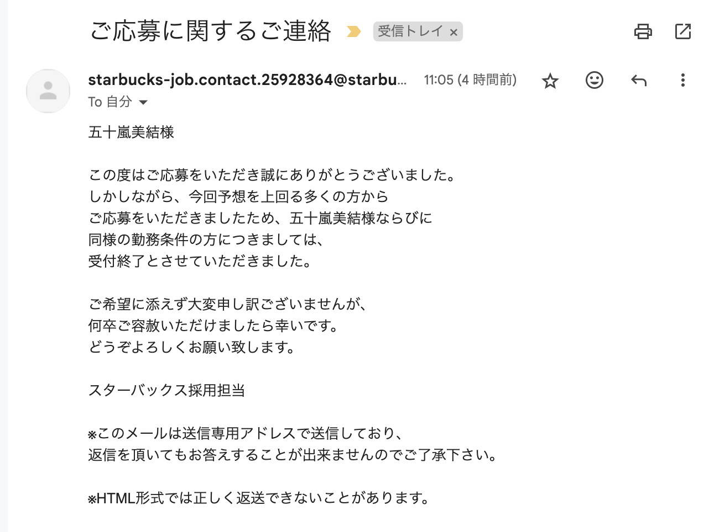

💖✨プログラミング✨💖
とあるサイトのページが更新されたらメールに通知がくるシステム
グループで話し合ってみたところ、「webclassで課題が更新された時にメールで通知がくるシステムがあったら便利になるのではないか」という意見が出ました
私は課題が出ない授業をとっているためwebclassではないものにしようと、どんな通知が来たら嬉しくなるか考えました
そして、スターバックスの募集ページが更新されたらタイミングを逃さず、すぐに応募できるのではないか！？と。名案すぎる･･･
どういうことかというと、募集が出て数時間、1日でも時間が経ってしまったら募集人数の多さの関係で面接まで行けずに下のように落ちちゃうという、、、まじ厳しすぎるって！

そこで、まずは違うもので検証してみてから実践していこうと思い、頻繁に情報が更新されるyahooニュースで通知がくるシステムを、chatGPTを頼りに作ってみました
メール送信の設定のところにメールアドレスと２段階認証のパスワードを入れることで、ページが更新されたら通知がくるというシステムになるそうです
import requests # ウェブページのデータを取得するため
import hashlib # ページの内容をハッシュ化して変更を検出するため
import time # 一定時間ごとにチェックするため
import smtplib # メールを送信するため
from email.mime.text import MIMEText # メールの本文を作成するため
from email.mime.multipart import MIMEMultipart # 複数のパートからなるメールを作成するため
# 監視したいサイトのURLとチェックする間隔（秒単位）
url = "https://news.yahoo.co.jp/"
check_interval = 300 # 5分ごとにチェック
# メール送信の設定
email_sender = ""
email_password = "" # セキュリティ上、保存方法に注意
email_recipient = ""
smtp_server = "smtp.gmail.com"
smtp_port = 587
# ページの内容のハッシュを取得する関数
def get_page_hash(url):
response = requests.get(url) # URLにリクエストを送り、内容を取得
response.raise_for_status() # ページが正常に取得できなければエラーを出す
page_content = response.text # ページのテキスト内容を取得
return hashlib.md5(page_content.encode('utf-8')).hexdigest() # ハッシュ化して返す
# メールで通知を送信する関数
def send_notification():
message = MIMEMultipart()
message["From"] = email_sender
message["To"] = email_recipient
message["Subject"] = "サイトのページが更新されました！"
body = f"サイトページが更新されました: {url}"
message.attach(MIMEText(body, "plain"))
# SMTPサーバーに接続してメールを送信
with smtplib.SMTP(smtp_server, smtp_port) as server:
server.starttls() # 接続を暗号化
server.login(email_sender, email_password)
server.sendmail(email_sender, email_recipient, message.as_string())
# サイトのページを定期的に監視するメインの処理
def monitor_page():
print(f"{url} を {check_interval} 秒ごとに監視しています...")
previous_hash = get_page_hash(url) # 初回にページ内容のハッシュを取得
while True:
time.sleep(check_interval) # 指定した時間だけ待機
try:
current_hash = get_page_hash(url) # 最新のハッシュを取得
# ページに更新があるかを確認
if current_hash != previous_hash:
print("ページが更新されました！通知を送信します。")
send_notification() # メールで通知を送信
previous_hash = current_hash # 新しいハッシュを保存
else:
print("ページに変更はありません。")
except Exception as e:
print(f"エラーが発生しました: {e}")
# プログラムを実行
monitor_page()
これを実行してみると、ターミナルに次々と更新されたら文章が出てきて、メールアドレスにも飛んできます。
が、メールアドレスのパスワードというものを設定していなかったのでメールが来ず、失敗に終わってしまいました・・・。
調べてみたら、gamilの2段階認証を設定をしたらできると書いてあったので、設定をしてみたんですがうまくいきませんでした。悔しい・・・！
監視したいサイトのurlというところをスターバックスのページに変え流だけで、自分の理想の通知メールが来るはずなので目的は達成すると思いました😌👌